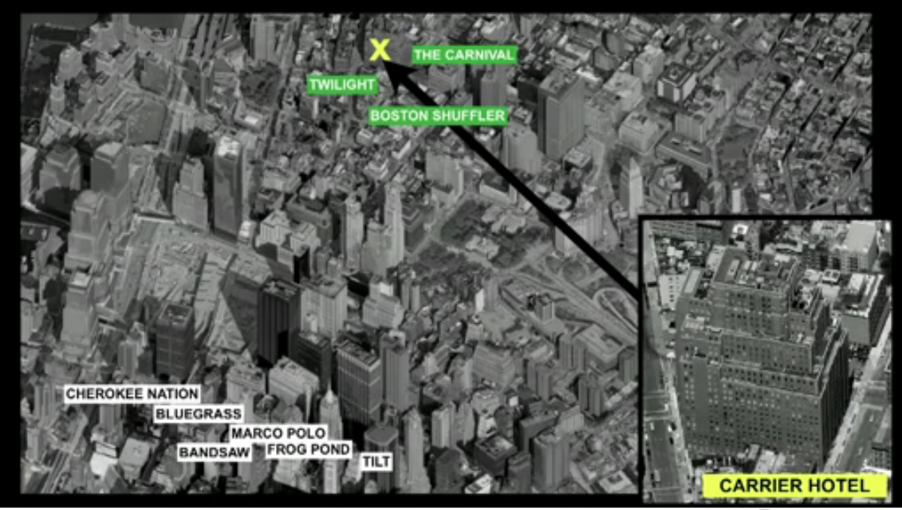

Un mundo controlado por algoritmos
El 26 de mayo de 2010 a las 14:45 horas de Nueva York se produjo un crash de la bolsa que hizo caer el índice Dow Jones en 900 puntos (una caida del 9%) el que se recuperó completamente unos pocos minutos después. A este fenómeno se le denominó el Flash Crash de 2010
Hay sobre 2.000 físicos de particulas que trabajan actualmente en Wall Street. Lo que hacen es modelar el comportamiento de las bolsas en algoritmos que transan acciones en cuestión de micro segundos. Para que tengan una idea nos demoramos 500.000 microsegundos en hacer un click con el mouse. Así que en términos de algoritmos si te demoras un par de segundos eres un perdedor.
Consideren esta imagen, tomada de una presentación reciente de Kevin Slavin en TED:

Un Carrier Hotel es un datacenter donde se arrienda espacio para colocar los servidores. En la foto tenemos este carrier hotel localizado en la calle Hudson, donde se transan las acciones de la bolsa de New York. Los nombres que aparecen en blanco o en verde son sitios con servidores que están corriendo algoritmos de compra/venta de acciones. Lo que ocurre es que los algoritmos como Cherokee Nation, Bluegrass, Marco Polo, etc. tienen 8 micro segundos de desventaja con respecto a los sitios que corren los algoritmos The Carnival, Twilight y Boston Shuffler. Entonces los edificios alrededor del carrier hotel están siendo vaciados para colocar servidores que se encuentren más cerca del lugar donde se transan las acciones.
La empresa Spread Networks construyó una trinchera de 1300 kilómetros entre Chicago y Nueva York para poder lograr transmitir una señal de 14 milisegundos a través de un enlace dedicado de fibra óptica. Así que literalmente estamos modificando el mundo para darle ventajas a unos algoritmos que negocian por nosotros en las bolsas de comercio. Pero, ¿alguien ha pensado las consecuencias que puede tener todo esto?
Nadie tiene claro que pasó en el El Flash Crash de 2010, porque nadie estaba en control de lo que pasó, literalmente fueron las máquinas las que provocaron la caida de la bolsa por 9 minutos ese día. De alguna forma los algoritmos entraron en una extraña resonancia, y generaron una espiral de transacciones que llevaron a la baja instantánea de la bolsa, y esos mismos algoritmos reaccionaron generando la recuperación.
Siento escalofríos cuando pienso que nuestros fondos de pensiones, o los trabajos de miles de personas dependen del comportamiento coordinado de muchos algoritmos, escritos bajo los supuestos de un conjunto de físicos teóricos que experimentan con sus ideas de cómo tratar con la complejidad en sus computadores, como si esto fuera un juego de ingenio, donde se trata de demostrar quien escribe el algoritmo más inteligente, sobre cosas que apenas comprendemos.
Espero que con esto puedan comprender por que tengo esta preocupación de explorar todas estas estrategias para predecir, tanto el futuro como el presente.
Les dejo esta presentación en TED donde Kevin Slavin habla sobre estas cosas: